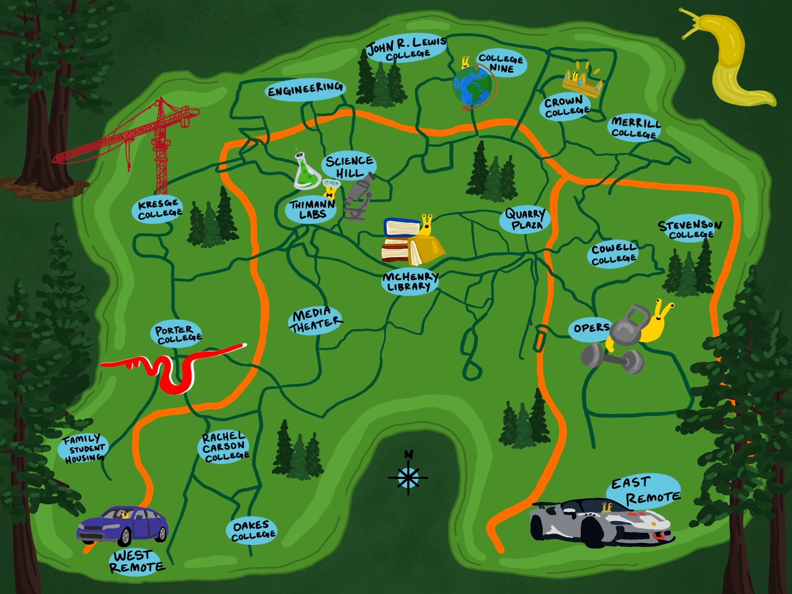

<!DOCTYPE html>
<html lang="en"></html>
<head>
    <meta charset="UTF-8">
    <meta name="viewport" content="width=device-width, initial-scale=1.0">
    <title>UCSC Music Map!</title>
    <link rel="stylesheet" href="styles.css">
    <link rel="stylesheet" type="text/css" href="css/site.css">
  <link rel="stylesheet" type="text/css" href="css/index.css">
  <link rel="stylesheet" type="text/css" href="css/project.css">
    <script src="https://code.jquery.com/jquery-3.7.1.min.js"></script>
    <script src="js/project.js" defer></script>
</head>

<body>
    <div id="myClick" class="box-location">
        <div class="pop-up-box">
          <h1>Welcome to the UCSC Music Map!</h1>
          <p>This is an interactive map of UCSC where you can pin songs you were listening to at specific spots on campus!</p>
          <h3>How does our site work?</h3>
          <p>As you explore the map, you will see pins placed in locations all around campus. Each pin represents a song that someone was listening to in that spot. You can add your own pin location and pick a song!</p>
          <p>Click OK to proceed.</p>
          <button id="okBtn">OK</button>
        </div>
      </div>
    <div id="main-web">
        <h1>Welcome to the UCSC Music Map!</h1>
    </div>

    <h1>UCSC Music Map</h1>

    <div id="map-container"> 
        
    </div>

</body>


